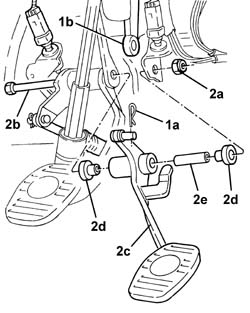
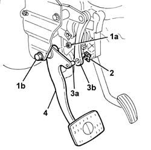

3330B23 brake pedal - r r for rhd versions
- Path
- Procedures > 33 BRAKING SYSTEM > 3330 HYDRAULIC BRAKING SYSTEM > 3330B pedal unit > 3330B23 brake pedal - r r for rhd versions
- Kind
- repair procedure (removal / refitting; the operation number is the code)
- Applies to
- engines: 1.6 TS, 2.0 TS; all production periods
- Interactive page
- https://sloeber94.github.io/elrnDB-a147/en/#/3025224
Applies to: engines: 1.6 TS, 2.0 TS; all production periods
 Removing
Removing
 Refitting
RefittingRemove the climate control system 5040C10 air conditioner box - r+r
1. Remove the split pin (1a), and disconnect the brake pump (1b) from the brake pedal.
2. Undo nut (2a) and withdraw pin (2b) as far as necessary. Then remove brake pedal (2c) complete with spacers (2d) and bush (2e).

Applies to: engines: 1.6 TS, 2.0 TS; all production periods
Refitting
RemovingCheck the brake pedal is undamaged.
Refit the brake pedal complete with bushes and spacer.
Fit the pedal retaining pin and tighten the nut.
Connect the brake pump to the bake pedal and secure with the split pin.
Applies to: engines: 1.6 TS, 2.0 TS; all production periods; only with equipment: Cambio robotizzato
Removing
Refitting1. Working in the pedal area, unscrew nut (1a) and remove pedal pin (1b).
2. Release the retainer.
3. Prise up pin (3a) from link (3b).
4. Recover the brake pedal.

Applies to: engines: 1.6 TS, 2.0 TS; all production periods; only with equipment: Cambio robotizzato
Refitting
RemovingCheck the brake pedal is undamaged.
Fit the brake pedal and attach the pin to the link.
Insert the pedal pin.
Engage the retainer.
Tighten the nut.
Check the brake pedal is working properly.